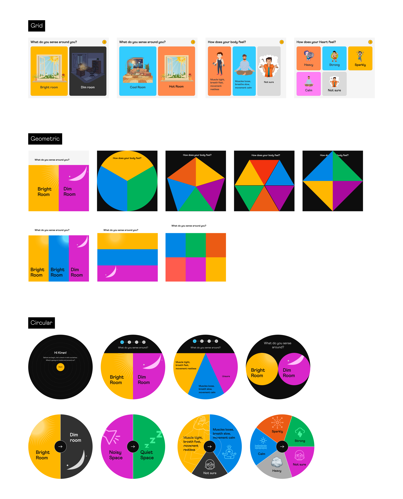
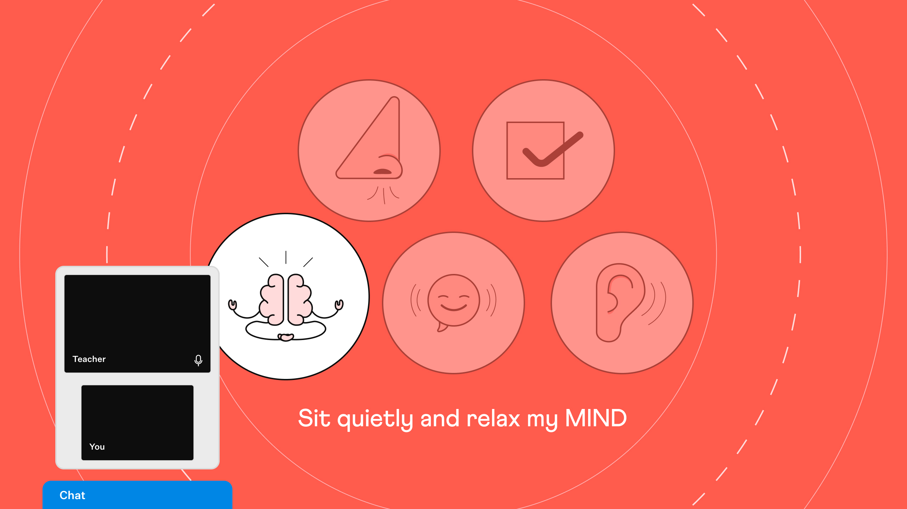
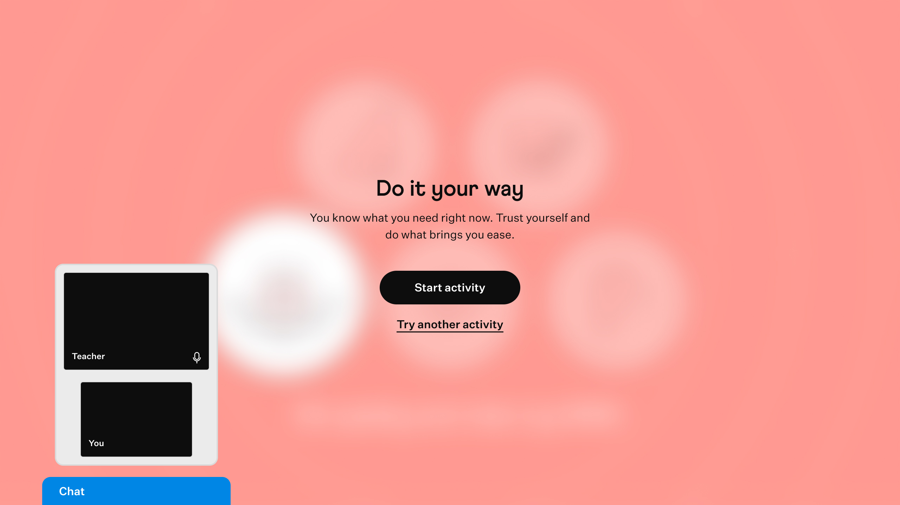
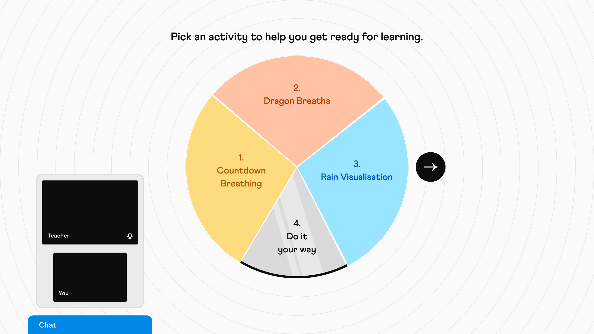

01
The Problem
When a student arrived dysregulated — tired, distracted, carrying the weight of a long day — the tutor had no way of knowing. The session would start, and whatever was going on with the student would surface mid-problem. Some tutors read the signs quickly and pivoted: a joke, a riddle, a rebus puzzle, anything to loosen the mood and bring focus back. But even when it worked, 20–30 minutes of a 50-minute session would be gone before any real math happened.
This wasn't an edge case. Class recordings showed it regularly, and a dedicated internal tutor cohort — the group Cuemath used to pressure-test ideas before any project reached a spec — confirmed what the recordings suggested: dysregulated students were consistent; tutor responses were not. Every tutor handled it differently. There was no standard.
A student not in an optimal state doesn't learn effectively — and a session that delivers 20 minutes of actual instruction isn't the product Cuemath promised. Weaker sessions meant weaker progress, and weaker progress was one of the primary reasons students churned.
02
Role
I led product design for Feel Check end-to-end — concept through four cohort rollouts. Of Cuemath's three SEL tools, this was the most complex: a four-stage immersive flow across two grade bands, built from scratch. UX, UI, interaction flow, and all design assets were mine; regulation activity videos were produced by the Motion Designer from a jointly developed brief.
I partnered with the PM on scope trade-offs, Engineering on implementation, Curriculum on content integration, and the Motion Designer on creative direction for the regulation activity videos. Clinical content — vocabulary, emotional options, and regulation activity library — was owned by Roots Global Educational Consultancy. My role was design translation: making a clinical framework work inside a 50-minute math session, not a counselling room. Where vocabulary tested too high-level with students, I flagged it, tested alternatives with the internal tutor cohort, and pushed for revisions. Final clinical call stayed with Roots.
Success criteria agreed upfront: students self-identifying emotion without prompting, tutors observing improved readiness, check-in completing under 5 minutes. One criterion wasn't measured but was central to the intent — that consistent emotional regulation before sessions would, over time, translate into stronger academic performance. We hadn't instrumented a way to measure that connection at launch.
One hard constraint: high asset volume across two grade bands. I descoped animated icons and reduced unique regulation video count for v1 — both planned for v2.
How we got to the design.
Research happened in three modes — each tightly scoped, each feeding the next.
Class recording review
~30 sessions
Dysregulation was consistent; tutor responses weren't. No standard pattern existed.
Internal tutor cohort
8 tutors
Pressure-tested concepts before spec. Surfaced "abandonment" insight that shaped Decision 1.
Phased cohort rollout
120 tutors · 417 students · 4 phases
Validated readiness, autonomy, and Unsure flow across two grade bands.
03
Decisions
The challenge wasn't the frameworks. It was the fit.
The clinical brief from Roots Global Educational Consultancy specified three science-backed frameworks: Wheel of Awareness (body-first recognition), RULER (emotion labelling), and Zones of Regulation (regulation strategies). These are established and widely used. The design question wasn't whether they worked — it was whether they could work inside a 50-minute math session, self-directed by a child, before any instruction had begun.
To translate these frameworks into a self-directed student experience, I explored how to surface the activity options through different layout approaches. The wireframe exploration tested multiple directions before settling on the circular form that made the Wheel of Awareness the interface itself.

Exploring how to surface activity options. The circular form wasn't decorative — it made the framework visible as the decision structure. Students didn't see "pick an activity"; they saw the same wheel they'd just moved through. Tested against grid and geometric approaches; the circular form had the lowest cognitive friction and strongest alignment with the framework logic.
I reviewed class recordings and tested the concept early with the internal tutor cohort. What became clear: any flow that felt clinical or adult-directed would be abandoned or resented. The design had to run on student initiative — the tutor needed to be present, but passive. Not a guide. An observer. That single constraint shaped every major decision that followed.
What the first internal build revealed.
The first build had no background audio on regulation activities. The assumption: visual content — breathing animations, calm sequences — would carry the regulation moment. It didn't. Tutors observed students tapping through activities quickly without settling. The experience felt like a screen, not a transition. I added ambient audio before external rollout. Average regulation time moved to 1.9 minutes of engaged time — students staying with the activity, not just completing it.
Insight
"Audio wasn't decorative; it was structural. For experiences where the interaction is the therapeutic tool, sensory quality is design, not polish."
From: Internal build observation, before external rollout.
What "Do It Your Way" revealed about student autonomy.
Post-launch, "Do It Your Way" was the dominant first choice across grade levels — 289 selections in the Green zone for G5–8 alone, ahead of every named activity. Students weren't confused or avoiding structure. They were choosing self-direction. For v2, I'm redesigning the activity menu to lead with "Do It Your Way," moving it from an option buried in the list to the primary entry point.
Insight
"Autonomy wasn't a fallback to offer when nothing else worked — it was what students reached for first."
From: Post-launch behavior, G5–8 Green zone (289 selections).

What students chose first. "Do It Your Way" showed that autonomy—choosing their own regulation path—wasn't a design fallback. It was the primary signal. Students trusted their own instincts about what they needed. For v2, this becomes the lead option, not a buried choice.
What grade scope revealed.
The original scope was G1–8. Early tutor conversations and review with Roots made it clear that naming body sensations and identifying emotional states independently was too demanding for G1–2 — not a simplification problem, but a developmental one. I scoped Feel Check to G3–8. G1–2 is deferred, not dropped.
Before locking the regulation activity experience, I explored three directions with the Motion Designer: fully abstract visuals, character-driven sequences, and non-humanistic partial elements — rain, breathing patterns, ambient light. The non-humanistic approach was chosen: neutral, non-projecting, and focused on physical sensation rather than a character to follow.

The regulation activity experience. Non-humanistic visuals (breathing patterns, soft light) guide physical sensation. No character to follow, no narrative. Audio was critical post-launch — visual content alone didn't create regulation moments; students tapped through without settling. With audio, average engaged time moved to 1.9 minutes.
Four decisions that defined how Feel Check works.
Decision 01
Tutor as observer, not director
Every selection belongs to the student. The tutor sees the same screen in real time but cannot tap or control anything. Student owns the selection. Tutor owns the exit.
What I considered
- Fully private — no tutor view. Rejected: dysregulated students would read solitude as abandonment.
- Tutor co-control — both can tap. Rejected: tutor-led behavior would override autonomy.
- Tutor as silent observer (picked) — present but no control. Best balance of safety and autonomy.
Validated in practice: 89% of students made independent choices even with the tutor watching — presence didn't undermine autonomy.
Student View
Tutor View (Read-Only)
Decision 02
The sequence mirrors how awareness builds
Feel Check runs as four stages: Senses → Body → Heart → Mind. Senses is environmental grounding — a warm-up before anything internal is named. Each stage progressively narrows: Body informs Heart, Heart informs Mind.
What I considered
- Grid menu of emotions — list-style. Rejected: didn't make the framework visible as the decision structure.
- Modal sequence — one stage per modal. Rejected: lost the cumulative narrowing across stages.
- Circular Wheel of Awareness (picked) — the framework itself becomes the interface. Lowest cognitive friction in cohort testing.
1. Senses
2. Body
3. Heart
4. Mind
I explored multiple layouts — geometric grids, modals, full-screen flows. I chose the circular form so the Wheel of Awareness could become the interface itself, not a reference diagram placed beside it.

The activity menu implemented as the Wheel itself. Students see the sequence they just completed (Senses → Body → Heart → Mind) reflected in the four regulation options. Tutor monitoring panel visible on left. The circular form is the framework, not a decoration.
Decision 03
Two grade bands, not simplified versions
The same UI runs for G3–4 and G5–8. What differs is the set of emotional options and regulation activities — not the visual design, vocabulary, or flow structure.
What I considered
- Simplified visual for younger — bigger icons, fewer steps. Rejected: implied "this is the kids' version" — undermined dignity.
- One single UI for all grades — same content too. Rejected: developmental vocabulary mismatch caused friction.
- Two grade bands, same UI, different content (picked) — accessibility through what appears, not how it looks.
G1–2 was ruled out — self-directed emotional identification wasn't developmentally accessible at that age. Deferred, not dropped.
Decision 04
"Unsure" as a first-class option
At every stage — Body, Heart, Mind — students could select "Unsure." Fixed in the UI, always present. When all three stages resolved to "Unsure," students were routed to a curated set of regulation activities. No dead end.
What I considered
- Skip button — quietly bypass the stage. Rejected: read as failure; reduced self-awareness signal.
- Required answer — must pick an emotion. Rejected: students would invent answers, breaking the data.
- "Unsure" as visible option (picked) — owns the honest answer. Carries through to curated regulation.
Post-launch: 20–22% of students selected "Unsure" at body awareness — the hardest dimension to name. 264 sessions followed the full Unsure path. Every one resolved.
Feel Check in a real session
Real classroom session showing a student moving through Feel Check independently. The sequence: Senses (environmental grounding) → Body (physical awareness) → Heart (emotional identification) → Mind (mental state), followed by self-selected regulation activity. Tutor monitors but does not direct.
What shipping to four cohorts revealed.
Activity names were the primary friction point, not the flow. "Sparkling", "Affirmation", and "Set Intention" caused visible hesitation — students asked tutors what they meant or skipped them entirely. The flow worked; the vocabulary didn't. I revised before external rollout: "Affirmation" → "Get Ready!", "Set Intention" → "Set a Goal!"
Read-only activity options were mistaken for interactive ones. Multiple students tapped the regulation activity options repeatedly, expecting them to respond. The affordance wasn't clear — options were meant to be read and then actioned, not clicked. Logged as a UX fix for the next iteration.
What class recordings showed — 25 sessions, Feb 2026

The complete Feel Check journey in time. Regulation is the largest segment—this is where the actual emotional regulation work happens. The entire sequence completes in 3.4 minutes on average, keeping within the 5-minute design spec.
04
Impact
Learning Readiness
67%
of tutors observed improved student readiness after regulation — the direct answer to the problem Feel Check was built to solve.
What 120 tutors and 417 students showed across four cohorts.
Feel Check was validated with 417 students and 120 tutors across four cohorts till March 31, 2026. The rollout continued beyond that measurement window — 3,234 sessions logged across G3–4 and G5–8. All metrics below are aggregates through the validation close. One critical gap: we didn't measure churn impact. We validated the intermediate signal (readiness improved), but never compared retention for students who completed Feel Check vs. those who didn't. That's the business outcome I should have instrumented.
1 — In-house
30 Jan
7
14
2
24 Feb
42
249
3
10 Mar
62
102
4
31 Mar
9
46
Student Independence
89%
Students chose their emotion without tutor prompting — the student-led design held in practice.
Check-in Duration
3.4 min
Average duration — from start to learning ready. Within the 5-min spec.
Unsure — Body
1 in 5
Students couldn't name their body state — the hardest stage. Unsure wasn't a fallback; it was the honest answer.
Engaged Regulation
1.9 min
Average time on regulation activities after ambient audio shipped. Reattempt rate dropped from 22% to 15%.
Zone distribution showed Green as dominant across both grade bands — most students arrived calm. But 53% of G3–4 sessions and 49% of G5–8 sessions weren't Green. Feel Check's real value was surfacing that share and doing something about it before instruction began.

The problem and the outcome. Feel Check's real value wasn't in serving the 47% who arrived calm. It was surfacing the 47–53% who arrived dysregulated, and improving readiness for nearly 2 out of 3 of them. Nearly half the cohort benefited from the regulation intervention.

G3–4 (421 sessions)

G5–8 (1,102 sessions)
Zone of Regulation distribution till March 31, 2026
What the data couldn't tell us. Feel Check was built on the premise that emotional regulation before sessions would, over time, improve academic performance. No metric was ever instrumented to prove that connection. Whether the product moved learning outcomes remains unmeasured.
05
Lessons
The intermediate signal isn't the business outcome.
Feel Check solved what it was designed to solve — students arrived at sessions more ready to learn. What we never answered is whether that readiness translated into stronger academic outcomes. We didn't instrument academic outcome measurement at launch due to timeline constraints (8 weeks from concept to rollout). In hindsight, I should have fought for even a rough proxy — error rate on first problem, problem-solving speed — to validate the core assumption. For my next role, I'd flag that gap differently in v2 planning and push for measurement upfront.
For sensory experiences, quality is design — not polish.
Two things shipped at a quality below what the experience needed: micro-interactions on the selection options across the four stages, and audio on the regulation activities. The first internal build shipped without ambient audio, assuming visual content alone would carry the regulation moment. Tutors observed students tapping through activities without settling; average engagement dropped to 0.8 minutes. After adding ambient audio before external rollout, engagement moved to 1.9 minutes. For experiences where the interaction is the therapeutic tool, sensory quality is design, not polish.
Deferred work needs a brief, or it stays deferred.
G1–2 was deferred for the right reason — self-directed emotional identification wasn't developmentally accessible at that age. But I should have written a brief during v1 to ensure the deferred work had a clear entry point for v2. Deferring without a brief means it stays indefinitely deferred. For my next role, I'd write a deferral brief before cutting scope — it's the only way to guarantee deferred work actually ships.
What carries forward
In any emotional or sensitive flow, presence-without-control beats both full privacy and full guidance.
 Open in Figma →
Open in Figma →